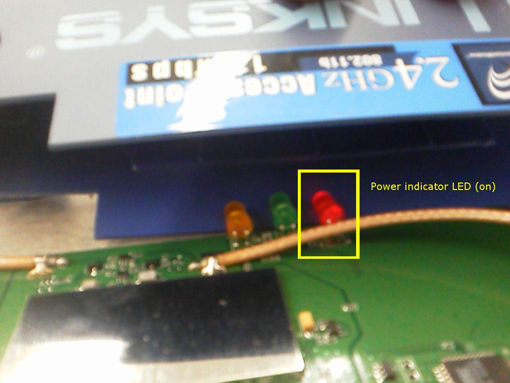

| 1 | AT29LV040A | Atmel | Flash memory | 4 Megabit (512K x 8) 3-volt Only 256 Byte Sector CMOS Flash Memory | 0245A (20TC) | http://www.alldatasheet.com/datasheet-pdf/pdf/56137/ATMEL/AT29LV040A.html |
| 2 | AS7C31024-12TC | Alliance | SRAM | 5V/3.3V 128K×8 CMOS SRAM (Evolutionary Pinout) | 0026 | http://www.datasheetcatalog.com/datasheets_pdf/A/S/7/C/AS7C31024-12TC.shtml |
| 3 | IC61LV5128-10T | SI | SRAM | 512K x 8 Hight Speed SRAM with 3.3V | 0244 (W4144600L2) | http://www.alldatasheet.com/datasheet-pdf/pdf/144751/ICSI/IC61LV5128-10T.html |
| 4 | ATF1504ASV | Atmel | Programmable Logic Device | Low-voltage, Complex Programmable Logic Device (CPLD) | 0238 (15AC44) | http://www.atmel.com/Images/doc1409.pdf |
| 5 | AT76C510 | Atmel | Ethernet to Wireless Bridge-on-a-chip | VNET-B | 0234 | http://pdf.datasheetcatalog.com/datasheet/atmel/1650s.pdf |
| 6 | RTL8201L | Realtek | Ethernet Receiver (PHY) | REALTEK SINGLE CHIP SINGLE PORT 10/100MBPS FAST ETHERNET PHYCEIVER | 2450 (2B037Q1) | http://realtek.info/pdf/rtl8201.pdf |
| 7 | RF3000 | NA | Modem | Spread-spectrum baseband modem | 0242 | http://pdf.dzsc.com/RF-/RF-3000.pdf |
| 8 | EC2244 | Pericom | Crystal Oscillator | SaRonix-eCERA 36.000 MHz oscillator | None | http://www.ecera.com.tw/pdf/Company%20profile_bak4.pdf |
| 9 | OSC-3NCMN | Siward | Crystal Oscillator | 44 MHz oscillator | None | |
| 11 | L1117l | NIKO-SEM | Voltage regulator | Voltage regulator | None | http://elk.informatik.fh-augsburg.de/da/ma-4/Datasheets/Other/L1117.pdf |
| 12 | APL1117 | ANPEC | Voltage regulator | Voltage regulator | None | http://www.anpec.com.tw/ashx_prod_file.ashx?prod_id=384&file_path=20131021180209364.pdf&original_name=APL1117.pdf |
| 13 | S0374B1 | LG | Intermediate Frequency filter | 374 MHz IF filter | None | http://www.datasheetarchive.com/dl/Datasheet-027/DSA00476379.pdf |
| 14 | S14126 | Frontier Electronics | Intermediate Frequency filter | IFT Coil | None | http://pdf1.alldatasheet.com/datasheet-pdf/view/257101/FRONTIER/KS1412N.html |
WAP11 version 2.6: Linksys Router Deconstruction
by Wu and Warner
Introduction
We took apart a Linksys Router, model WAP11, and isolated its circuit board.
Circuit Board
Circuit board with components labeled with function and index number. Refer to the indexed Block Diagram in the next section on detailed information for each of the components.
Mechanical notes:
The shell of the router is composed of injection molded thermoplastic. This decision is the logical choice for a cheap, high volume unit such as a home router. The components can be made extremely cheaply while still thoroughly protecting the circuit board within. A matrix of vent holes exists on the top of the router case, presumably in order to enable passive cooling via natural convection. Perplexingly, it appears as though only half the number of screws were actually installed. While two holes existed for screws underneath the rubber feet, only one was installed. And again, while two holes existed for screws to mount the circuit board to the baseplate, only one screw was ever actually installed. This theory is supported by the intact warranty label and the fact that threads were never cut by the self threading screws into the plastic bosses accepting the screws. However, the mechanical robustness did not appear to be compromised as a result.
All connectors that the user might interface with, including the ethernet port, power supply connector, reset button, and coax connectors were all firmly secured. The coax connectors going to the antennas, for example, are secured with nuts and lock washers to the plastic case. Unlike all other components on the board, which are surface mounted, the connectors are all soldered through the board, giving more mechanical durability.
Electrical notes:
A router has two functions: it takes Ethernet signal from a wire and broadcasts it with an RF carrier wave, and it takes wireless RF signal from connected devices and converts it into Ethernet, to be sent back into the Internet. The board is structured such that the dataflow moves roughly vertically, top to bottom in the case of broadcasting, and bottom to top in the case of sending back packets to the Internet. The same chips are used for processing the information in each direction. This flow will be later reflected in the Block Diagram.
The most interesting part of the board was the shielded RF compartment. We had to remove a metal plate which protected the insides like a Faraday cage. According to the FCC documentation, the RF components are mainly there to take a signal which has already been modulated, ramp it up to an intermediate carrier frequency, and amplify this signal to a proper RF signal which can be broadcast with coax antennas. The shielded RF module appears to be on its own ground plane, further helping isolate it from the rest of the circuit.
The circuit board is likely machine tested before being shipped from the factory; the bottom of the board has testing locations for a probe.
There is ton of extra space on the board, which possibly has to do with the desired antenna spacing.
Bill of Materials
Block Diagrams

The WAP11 has an FCC ID of O7JGL2411AP. Searching the authorized equipment database provided by the FCC's Office of Engineering and Technology, we were able to find full documentation of the router. This block diagram was one of the included documents.
The FCC issued block diagram describes the general architecture of the WAP11 router, and suggests specific ICs to be used in the blocks. The board we took out of our router follows the architecture, but in some cases uses different ICs. Specifically, the following substitutions were made. An RF3000 baseband modem was used in placed of a HFA3861A baseband modem. An S0374B1 intermediate frequency converter was used in place of the HFA3683A frequency converter. Finally, it is uncertain but probable that the RF/IF converter was substituted, but we cannot confirm this since the printing on the other chips in the RF-shielded compartment were illegible.
User Manual:
http://downloads.linksys.com/downloads/userguide/WAP11-v2.6_ug,0.pdf
Functional Operation Verification

As shown by powered red LED in this blurry photo, the router was operational at the time of deconstruction. LED indicators and recognition of Wifi network by computer prove that unit does at least power on and fulfill minimum functions.
Disassembly Process

Figure 1. The router fully intact, consisting of wo antennas, power supply, and main unit.
Figure 2. The bottom of the router with rubber feet removed. Note there is only one screw in place. Initially this was thought to be the result of a previous deconstruction, but upon further investigation, it appears as though no screw was ever bolted in place. The unit is designed to allow the screws to self thread into the thermoplastic. However, no such threads can be observed in the other foot.

Figure 3. With the Phillips head screw removed, the front face can be separated from the main body, exposing the circuit board.

Figure 4. The circuit board is exposed, but not yet free. The coaxial connector cables restrain the board in the plastic case.

Figure 5. Next, the coaxial connectors need to be removed. A nut and lock washer securely retain each connector.

Figure 6. The top plastic cover is popped off from the baseplate and circuit board. A single screw can be seen near the ethernet connector retaining the circuit board to the plastic baseplate. Another hole appears to exist for a screw to retain the board, but upon inspection, no threads have been initiated by a screw, indicating that it was never installed.

Figure 7. The bottom of the circuit board.

Figure 8. Top of the circuit board with aluminum sheet metal shield over RF components.

Figure 8. The top of the board with shield removed. The shield was removed by simply prying off the cover, which was held on with a simple press fit.